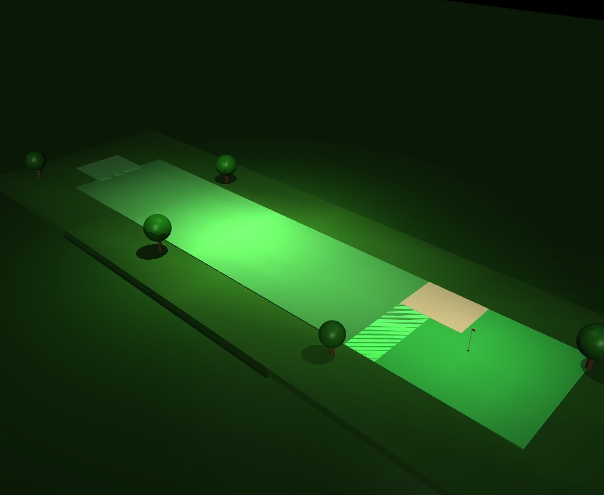
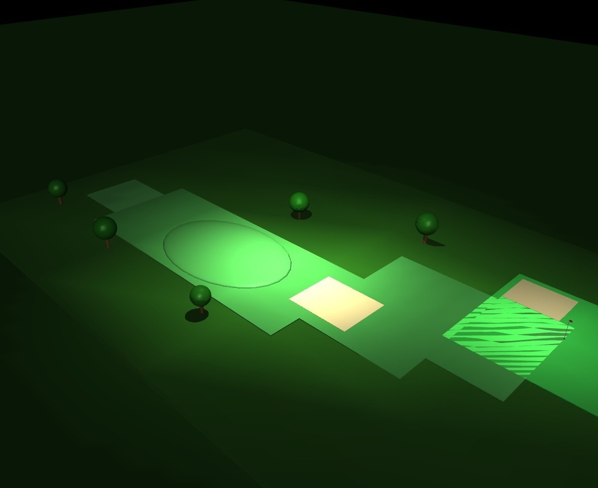
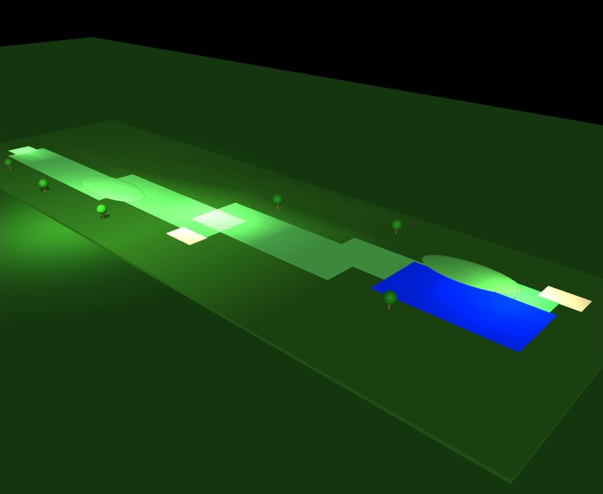
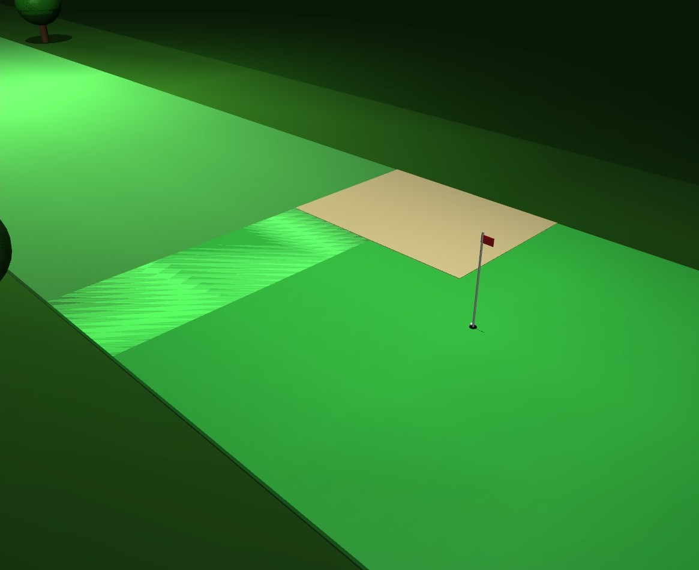
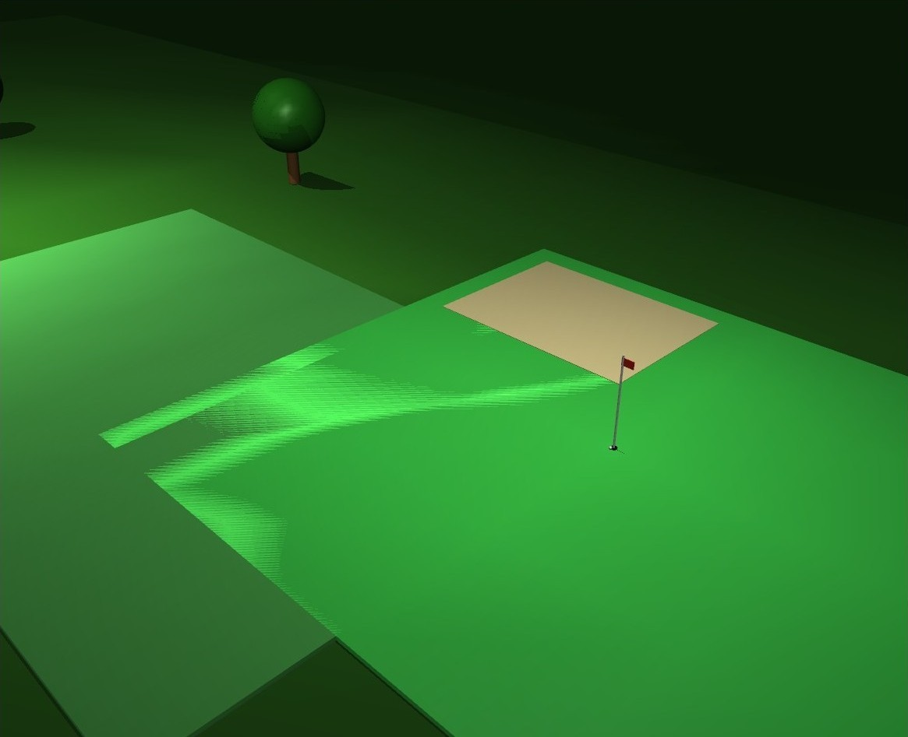
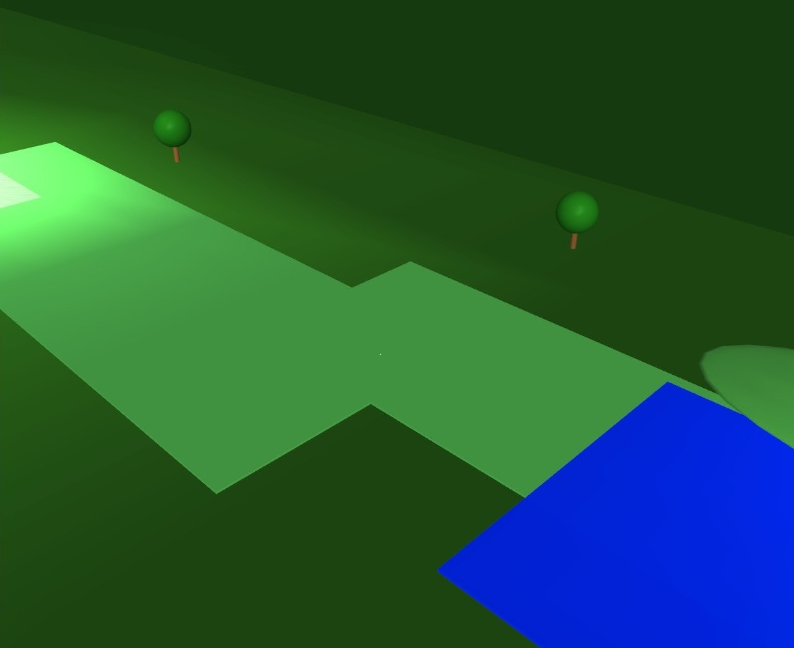
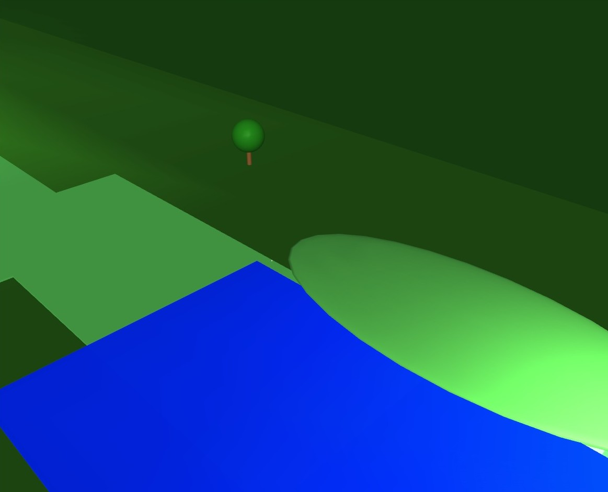
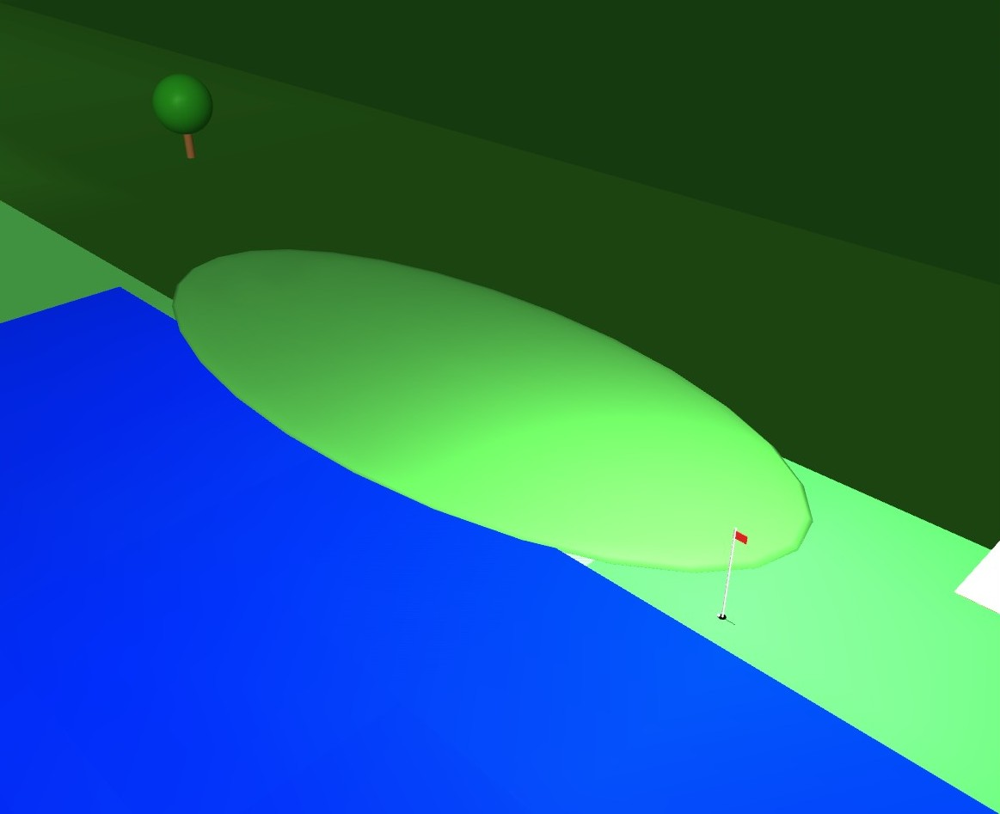

Simulation & Optimization
Golf Shot Optimization
Robots that throw, kick, or strike objects must choose a few launch parameters well enough to land on target despite drag, wind, and uneven ground, and golf is a compact, measurable version of that problem. The objective was to plan shots that reach the hole in as few strokes as possible on three simulated courses of increasing difficulty (Figure 1). To do that, I built a MuJoCo simulation with aerodynamic drag, wind, and terrain-dependent rolling friction, along with a CMA-ES framework that searches over launch parameters. That framework first optimized a 16-parameter robot-arm swing (aim, backswing, and 14 joint torques), but club–ball contact made outcomes too noisy to converge, so I reduced the search to a 3-parameter launch model and added restarts with a shrinking search radius to escape local minima near the hole. With these changes, CMA-ES holed both short courses in one stroke within 9 generations, or 144 simulated shots, including a course with a 1.5 m/s crosswind and landing-terrain penalties (Figure 2, Table 1). On the hazard course (Figure 3), optimizing the whole shot sequence at once finished in 2 strokes, one fewer than re-planning greedily after each shot (Table 1). Together, these results show that a well-chosen low-dimensional parameterization made the problem solvable, and that planning the sequence as a whole outperforms choosing each shot in isolation.

(a)
(b)
(c)
(a)
(b)
(a)
(b)
(c)| Measure | Result |
|---|---|
| Short courses holed in one stroke | 2 of 2 |
| CMA-ES generations to a hole-in-one | Within 9 (144 simulated shots) |
| Crosswind on the windy course | 1.5 m/s |
| Hazard course, full-horizon planning | 2 strokes |
| Hazard course, greedy re-planning | 3 strokes |
| Search space | Reduced from 16 to 3 parameters |